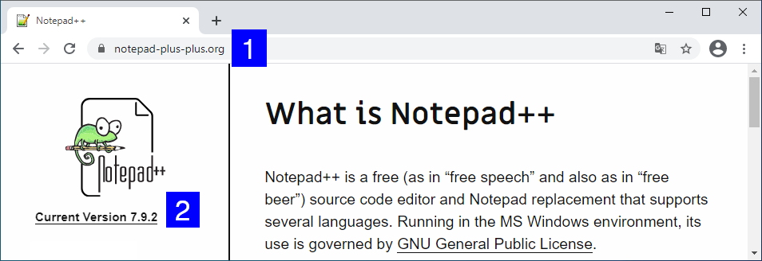
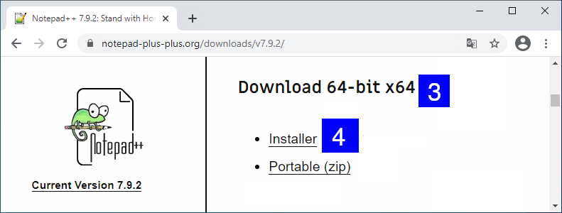
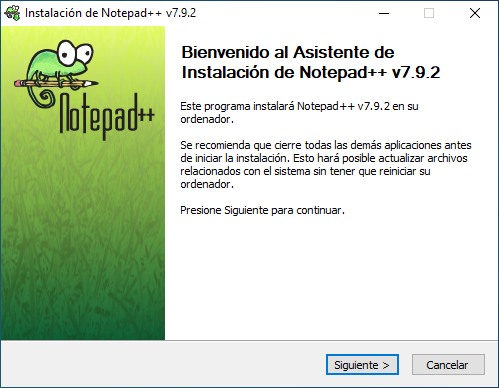
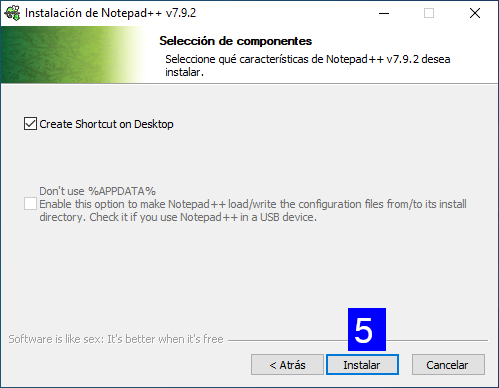

Notepad++ es un editor de texto para Microsoft Windows gratuito y libre (Licencia Pública General de GNU) con soporte para varios lenguajes de programación incluído Python 3.
Desde tu navegador preferido, entra en la dirección https://notepad-plus-plus.org/ [1] y pulsa en el enlace Current Version X.X.X. [2]:
Ahora comprueba que estás en la sección Download 64-bit x64 [3] y pulsa en Installer:
Ahora abre el instalador que te has descargado:
Pulsa en el botón Siguiente con las opciones y valores que vienen por defecto hasta cuando llegues a Selección de componentes:
Asegúrate que tienes activada la opción Create Shortcut on Desktop [5] y pulsa en Instalar. ¡Espera unos segundos y estará instalado!
En tu Escritorio de Windows verás el programa Notepad++. Ábrelo y verás algo parecido a lo siguiente:

¡Enhorabuena! Ya puedes usar el editor de texto Notepad++ en Windows para programar en Python 3.
Tutorial creado por Manuel Ignacio López Quintero bajo esta licencia | Volver a tutoriales.